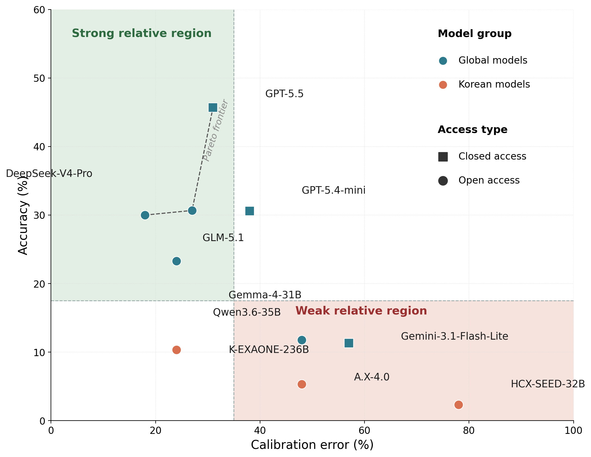

연구진이 한국어 웹 탐색 능력을 재는 벤치마크 K-BrowseComp를 공개했습니다. 문제 400개 중 300개를 한국어 화자가 직접 검증했습니다.
GPT-5.5 같은 최신 모델도 30~45%에 그쳤습니다. 같은 급 모델이 영어 벤치마크에서는 84%를 넘깁니다.
한국 정부의 파운데이션 모델 사업으로 나온 국산 LLM은 0~10%였습니다. 언어와 문화 맥락이 곧 성능 격차였습니다.
영어 벤치마크 84점을 보고
한국어 업무에 AI를 맡기셨습니까?
같은 모델이 한국어 웹에서는 45점을 받습니다.
글로벌 AI 에이전트의 벤치마크 점수를 보고 도입을 결정합니다. 영어 웹 탐색에서 84%를 받았다고 합니다. 그래서 한국어 고객 응대와 자료 조사에 그대로 투입합니다. 그런데 결과물이 자주 틀립니다.
연구진이 그 이유를 수치로 보여줬습니다. 한국어 웹 탐색만 시키면 같은 모델이 45%로 떨어집니다. 점수가 절반으로 무너진 것입니다.
이 글은 한국 시장에서 AI 에이전트를 쓰려는 리더를 위한 것입니다. 글로벌 점수를 한국어 업무 근거로 쓰면 왜 위험한지 다룹니다.
많은 기업이 한국어 업무에 AI 에이전트를 붙이고 있습니다. 고객 문의 처리, 시장 조사, 사내 자료 검색이 대표적입니다. 도입 근거는 대부분 글로벌 벤치마크 점수입니다.
이 연구는 그 근거의 빈틈을 드러냅니다. 영어에서 84%를 받은 모델이 한국어에서는 45%입니다. 점수 하나로 한국어 성능을 가정하면 절반의 위험을 떠안습니다.
위험은 추상적이지 않습니다. 한국어 고객 응대를 검수 없이 자동 발행하면, 틀린 답 절반이 그대로 고객에게 나갑니다. 잘못된 안내 한 건이 환불과 신뢰 손실로 이어집니다.
첫째, 언어만 바뀌어도 성능이 절반으로 떨어집니다. K-BrowseComp는 한국어 웹을 뒤져 답을 찾는 문제 400개로 구성됩니다. 최고 점수는 GPT-5.5의 45.67%였습니다. 같은 급 모델이 영어 BrowseComp에서는 84%를 넘깁니다. 모델 성능이 아니라 언어 환경이 격차를 만듭니다.

둘째, 국산 파운데이션 모델은 더 어려운 처지입니다. 한국 정부의 독자 AI 파운데이션 모델 사업으로 공개된 LLM들은 0~10.33%에 머물렀습니다. K-EXAONE이 10.33%로 가장 높았고, 일부 모델은 0%였습니다. 한국어 데이터로 학습했어도 웹 탐색이라는 복합 작업은 별개의 능력입니다. 리더는 "국산이라 한국어를 잘한다"는 가정을 점수로 검증해야 합니다.
| 모델 | 한국어 검증셋 | 합성 스트레스셋 |
|---|---|---|
| GPT-5.5 (글로벌) | 45.67% | 26% |
| GLM-5.1 (글로벌) | 30.67% | 19% |
| DeepSeek-V4-Pro (글로벌) | 30.00% | 22% |
| Gemini-3.1-Flash-Lite (글로벌) | 11.33% | 11% |
| K-EXAONE-236B (국산) | 10.33% | 13% |
| A.X-4.0 (국산) | 5.33% | 1% |
| HyperCLOVAX-SEED-Think-32B (국산) | 2.33% | 2% |
| Kanana-2-30B (국산) | 0.00% | 0% |
셋째, 실패는 검색을 못 해서가 아닙니다. 연구진이 틀린 시도의 과정을 분석했습니다. 틀린 시도는 오히려 검색을 1~3회 더 많이 했습니다. 정보를 못 찾은 게 아니라 찾은 정보를 못 엮은 것입니다. 여러 출처를 연결하고 조건을 추적하는 단계에서 무너졌습니다.
이 점이 리더에게 중요합니다. 검색을 더 시키거나 자료를 더 주는 것으로는 풀리지 않습니다. 약점은 입력이 아니라 추론과 상태 관리에 있습니다.
넷째, 어려운 문제일수록 격차가 벌어집니다. 연구진은 기계로 만든 까다로운 문제 100개를 추가했습니다. 가장 강한 모델도 26%에 그쳤습니다. 검증셋에서 45%를 받은 모델도 난도가 오르면 급락합니다. 쉬운 시연과 실제 업무의 거리가 그만큼 멉니다.
실제 한국어 과제 20~30개를 만들어 직접 테스트합니다. 회사의 실무 질문과 정답을 함께 준비하면 됩니다. 점수가 영어 발표치의 절반 이하면 사람 검수를 기본값으로 두십시오. (30분)
우리 팀이 AI 에이전트에 시킬 한국어 업무 질문 20개를 만들어 주세요. 각 질문에 정답과 출처를 함께 적어 주세요. 한국 웹에서 여러 페이지를 거쳐야 풀리는 난도로 구성해 주세요. 업무 영역: [여기에 고객 응대 / 시장 조사 등 입력]
절반이 틀릴 수 있으니 자동 발행은 위험합니다. 답과 함께 근거 출처를 반드시 표시하게 합니다. 검수자가 출처만 1분 확인하는 절차로도 오류를 크게 줄입니다. (1시간)
국산이라는 이름만으로 한국어를 잘한다고 가정하지 않습니다. 1번에서 만든 과제로 두 모델을 나란히 돌립니다. 비용과 보안까지 함께 보고 결정하십시오. (1시간)
프리프린트 논문입니다. 피어리뷰 전이라 수치와 해석이 바뀔 수 있습니다. 핵심 경향을 참고하되 단일 근거로 쓰지 마십시오.
단일 탐색 환경입니다. 하나의 브라우징 도구와 검색 백엔드로만 측정했습니다. 다른 환경에서는 점수가 달라질 수 있습니다.
도메인이 한쪽에 쏠려 있습니다. 엔터테인먼트와 미디어 문제가 36%로 가장 많습니다. 분야가 다르면 성능도 다를 수 있습니다.
모델은 계속 바뀝니다. 점수는 측정 시점 기준입니다. 한국어 성능은 직접, 주기적으로 다시 재야 합니다.
AI 에이전트의 영어 점수는 한국어 성능을 보장하지 않습니다. 한국어 업무는 한국어 과제로 직접 검증하고 사람 검수를 두십시오.
웹 브라우징 에이전트(Web Browsing Agent): 사람 대신 웹을 검색하고 여러 페이지를 오가며 답을 찾는 AI입니다. 단순 챗봇과 달리 직접 탐색을 수행합니다.
벤치마크(Benchmark): 여러 AI를 같은 문제로 비교 측정하는 표준 시험입니다. 점수로 모델 간 성능 차이를 봅니다.
멀티홉 추론(Multi-hop Reasoning): 한 번에 못 찾는 답을 여러 출처를 단계적으로 이어 찾는 방식입니다. 이 벤치마크 문제의 절반 이상이 여기에 해당합니다.
합성 문제(Synthetic Problem): 사람이 아니라 기계가 자동으로 만들어 낸 시험 문제입니다. 더 까다로운 상황을 의도적으로 설계합니다.
- Lee, N., Yoon, D., Son, G., 외. (2026, June). K-BrowseComp: A Web Browsing Agent Benchmark Grounded in Korean Contexts [Preprint]. arXiv. (원문 보기 ↗)